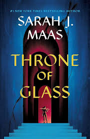

Reading allows me to escape reality
My favorite series has to be the Hunger Games and I am glad the author is still writing sequels for the books as well
For the best books I use Goodreads to connect with my friends and reads
here is one variation of the cover
